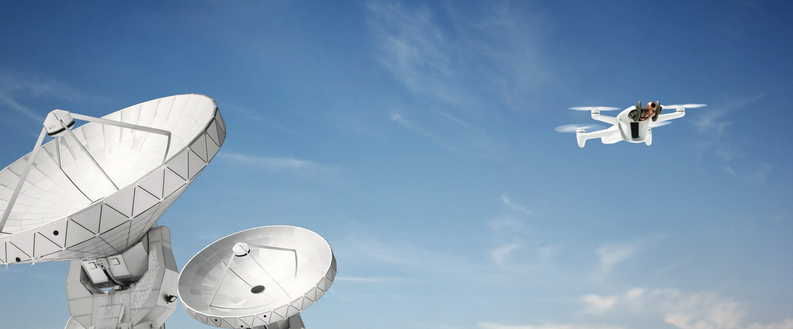
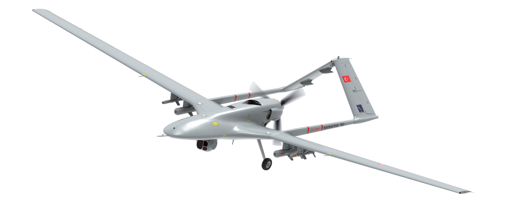
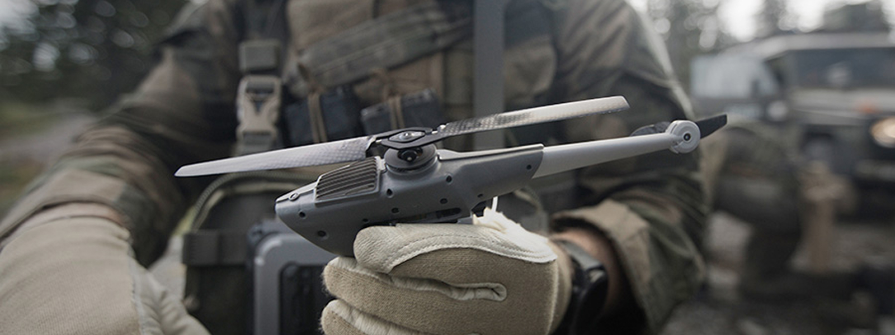

Civil · Quadricóptero
DJI Mini 4 Pro
Introdução, fotografia e inspeção visual leve
Conheça a plataforma →17 PLATAFORMAS • CIVIS, MILITARES E CIENTÍFICAS
Explore a arquitetura, a aplicação e os limites de cada modelo. Números de catálogo são declarações dos fabricantes nas condições de seus ensaios.
Civil · Quadricóptero
Introdução, fotografia e inspeção visual leve
Conheça a plataforma →
Civil · Quadricóptero
Treino e aquisição RGB com equipamento já disponível
Conheça a plataforma →

Civil · Quadricóptero
Mapeamento e medição em missões empresariais
Conheça a plataforma →
Civil · Multirrotor
Plataforma para sensores e missões de engenharia
Conheça a plataforma →
Civil · Multirrotor
Aplicação agrícola e distribuição de materiais
Conheça a plataforma →
Civil · Quadricóptero protegido
Inspeção em ambientes internos e confinados
Conheça a plataforma →

Civil · Quadricóptero
Fotogrametria e exploração de conectividade
Conheça a plataforma →
Civil e defesa · Asa fixa VTOL
Monitoramento, segurança e inteligência
Conheça a plataforma →
Militar · Asa fixa
Inteligência, vigilância e reconhecimento
Conheça a plataforma →
Militar · Asa fixa
Vigilância persistente e missões marítimas conforme configuração
Conheça a plataforma →

Militar · Helicóptero de rotor único
Reconhecimento de proximidade
Conheça a plataforma →
Pesquisa · Helicóptero coaxial
Demonstração de voo e exploração em Marte
Conheça a plataforma →Nenhum modelo encontrado. Tente outra busca.